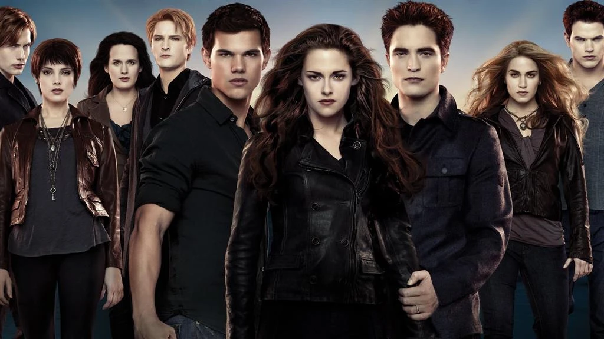

Cuando Isabella Swan se muda a Forks, una pequeña localidad del estado de Washington donde no deja de llover, piensa que es lo más aburrido que le podía haber ocurrido. Pero su vida da un giro excitante y aterrador una vez que se encuentra con el misterioso y seductor Edward Cullen. Bella es el alma gemela que lleva 90 años buscando, pero su olor amenaza con sumirlo en un frenesí irrefrenable por alimentarse. Incapaz de resistirse a pasar tiempo con Bella, Edward le desvela su secreto con la esperanza de ahuyentarla, pero solo consigue que la adolescente quede más prendada de él.